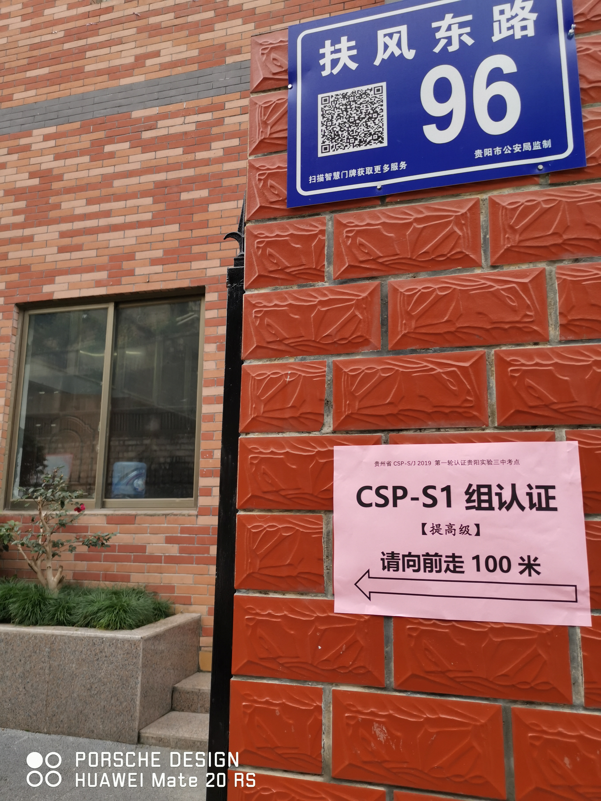
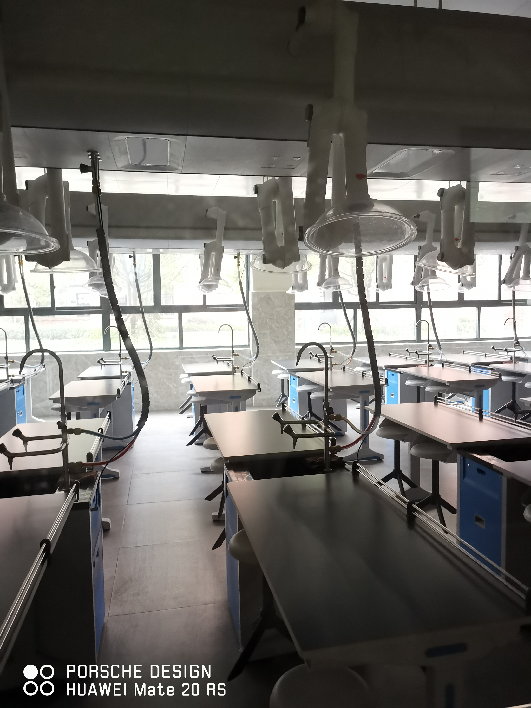

一些非常有用值得Mark的網站
這次考試選在了人生地不熟的實驗三中考，聽説早上超級堵，但沒想到一路通暢
實驗三中或許是這里最具現代色彩的建築了，附近想找家早餐店吃個東西都顯的那麽痛苦（＞﹏＜）
貴州今年是機試試點，實驗三中的一體機看著非常舒服（好歹人家是win7的系統，不像某北）。計算機所有的軟件路徑全部變更或是刪除了，計算器和DevC++想都不要想（太狠了，畢竟我也是什麽辦法都試過了( ▼-▼ )）。開考時老師會給一個IP地址，登陸網址進行機試，今年的網站好像是北京航空航天大學做的（好像是某個同學的畢業設計吧），開考15分鐘，網站所有人都登不上去，（F5都按爛了），接著巡考老師就來通報說那邊考試的服務器崩掉了（對，崩掉了(⊙—⊙)），臨時啓用B卷進行紙試，順便加時了15分鐘
43道選擇題，更模擬題是一樣的考法，前15道基礎知識題目當中有原題，今年的微機原理考得較少，側重在算法計算類的題目。閲讀程序寫結果的題目比較繞，幾乎三道大題都有側重在時間複雜度上的題目，（遞歸題永遠是噩夢）。相比閲讀程序寫結果的題目，補充程序就相對來説簡單了許多，（畢竟還可以騙騙分(●'◡'●)）
天氣是真的冷
考前一定記得要上個洗手間
一定要吃了早餐再來實驗三中，這邊什麽也沒有
考場里是真的冷
看看人家的實驗室（@某北）
一些非常有用值得Mark的網站

C++經典算法

支持作者
聯係博主